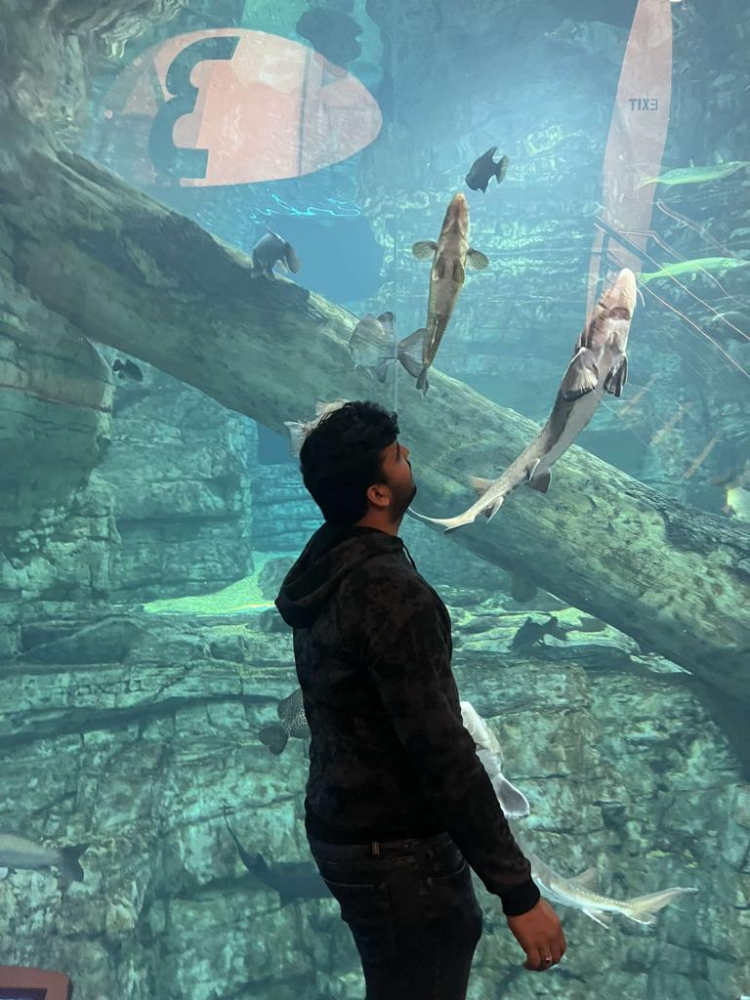

Resume
Praneeth Reddy Kolan
252 Revere Beach Pkwy, Chelsea, MA||224-XXX=-XXXX
Quick Summary
Seeking a beginner role to enhance and explore
my technical knowledge. I have the flexibility to
adapt to any new environment and work
tirelessly on interesting projects.
EDUCATION
NEW ENGLAND COLLEGE
MS Computer Information Systems [2022-2024]
B.Tech Mechanical Engineering [2017-2021]
Guru Nanak Institution
Intermediate Education MPC [2015-2017]
PAGE Junior College
Secondary Education
Gurukula Vidyapeeth High School
Work Experience
Automotive Manufactures Pvt.Ltd Intern [July 2019]
Bore Replacement Supervisor
GSV Projects Pvt.Ltd Intern [June 2019]
Field Engineer For Machinery
ISIE Workshop Organiser [2019]
Skill Development On Electrical Design and Developement of Vehicles
SKILLS
Technical Skills
C, HTML, CSS, BOOTSTRAP, PYTHON
Operating Systems
Windows. MAC
Softwares
Auto CAD, Solid Works, Office Suite, Adobe Photoshop CC, Autodesk MAYA, iMOvie
EXTRA CIRCULAR ACTIVITIES
- Worked as the EB Member for Street Cause Gold [2020-2021]
- Rescued and fed more than 300 dogs and animals during lockdown[2020]
- Organizing committee member of SCG village Adoption Event [2019]
- Participated in Fashion Parade at PVT [2019]
- Awarded Finisher Medal in Marthi suzuki DEVIL's Circuit Event
- Awarded 2 Gold medal in Basketball at PAGE sports meet [2017,2018]
- Awarded as Sapphire Group head boy at St Joseph's high School [2012]
Gallery

Cover Letter
Praneeth Reddy Kolan
From:
Boston,MA.
To:
Hiring Mananger,
Milwaukee,WI.
I am writing to express my interest in the full stack developer position that you have posted. I believe that my experience and skills make me a strong candidate for this position.
I have been working as a full stack developer for the past five years, and I have extensive experience with both front-end and back-end development. I have worked on projects of all sizes, from small personal projects to large enterprise systems. My experience has given me the opportunity to work with many different technologies, including C#, Java, JavaScript, HTML5, CSS3, ASP.NET MVC, ASP.NET Web API, SQL Server, Entity Framework, jQuery, Bootstrap, AngularJS, Node.js and more.
My core strengths are my ability to learn quickly and my attention to detail. I pride myself on being able to pick up new technologies quickly and efficiently. I also take pride in my ability to write clean code that is easy to read and maintain. I believe that these skills are essential for any developer who wants to be successful in today’s competitive job market.
I would like to thank you for your time and consideration. I look forward to hearing from you soon.
Annotated Summary
Fish life span is more dependent on their feed and the condition of the water. The more we look after the more days they live. Unfortunately, fishes die the most compared to any other pets. To overcome this problem, authors have discovered a solution using the Internet of Things. Using microcontrollers, pH sensors, and a servo motor they invented a system to look after the feeding and water quality from time to time even without human assistance. The authors underwent a few phases and tested the working of the system. Thus, they got recognized by the IR4.0 system which is a development system supporting fishes.
The system consists of two microcontrollers controlled by a WIFI module. The pH sensor and servo motor for feeding are connected to controllers. Lastly connecting them to the internet and the BLYNK application through which users can monitor the condition of fish and water.
As a part of testing, the authors tested in three phases. In the first two phases, they haven’t used a filter for water filtration and fed the fish twice and thrice a day as 2 sets of feeding. Followed by without filter in the next two phases. In the last two phases also fed the fish twice and thrice per day. The phases analysis came out very helpful. Feeding the fish over leads to acidic water and the same for water without a filter. So they concluded to feed the fish twice a day with good filtration along with temperature settings.
Critique The Article
This article is an IEEE research paper that is reputable and the system mentioned in this paper is certified by the fish development system as IR4.0. By this, we can say that it is reputable.
This research topic is helpful for me as I have been working on sensors from my undergraduate projects. pH sensor using LCD indicator is new to know. Hopefully, I will remember this and work on it using in my new projects.
Bibliography
A. K. Pasha Mohd Daud, N. A. Sulaiman, Y. W. Mohamad Yusof, and M. Kassim, "An IoT-Based Smart Aquarium Monitoring System," 2020 IEEE 10th Symposium on Computer Applications & Industrial Electronics (ISCAIE), 2020, pp. 277-282, DOI: 10.1109/ISCAIE47305.2020.9108823.
Website- https://ieeexplore.ieee.org/document/9108823
Annotated Bibliography
Alalawi, H., Alsuwat, M., & Alhakami, H. (2021). A Survey of the Application of Artificial
Intelligence on COVID-19 Diagnosis and Prediction. Engineering, Technology & Applied Science Research, 11(6), 7824–7835. https://doi.org/10.48084/etasr.4503
This article talks about the classification of supervised learning in terms of machine learning. Through this article, readers can have a clear study and apply the COVID-19 outbreak diagnosis and readers can predict the upcoming wave impact. The data help readers to learn the classification methods. The article is peer-reviewed and published in engineering, technology, and applied sciences research (2021). This article helps to strengthen skills in classification methods using various datasets and their variations.
Sandra, S., Raghavan, A., & Madan Kumar, P. (2022). Application of artificial intelligence
in the diagnosis and survival prediction of patients with oral cancer: A systematic review. Journal of Oral Research & Review, 14(2), 154–160. https://discovery-ebsco-com.nec.gmilcs.org/c/5lhlqz/viewer/html/a7gqljdzbj
This article conveys a systematic review to find the survival rate among oral cancer patients using artificial intelligence. The forms of the results are used with machine learning methods. Article studies show that only a 5-year survival rate is able to predict by AI models. The accuracy of the machine learning methods- decision tree classifier, logistic regression, and boosted decision tree models were 76%, 60%, and 88.7%, respectively. This article is published recently in EBSCO. These studies are important for identification and survival prediction, which will contribute to future advancements, change in the treatment plan, and reduce healthcare problems.
Xiangru Li, Jinfan Tian, Nan Nan, Chenchen Tu, Dongfeng Zhang, Xiantao Song, and
Hongjia Zhang. (2021). Artificial Intelligence Based Myocardial Ischemia Detection in Cardiac Radiology, 109–113. https://doi-org.nec.gmilcs.org/10.1145/3500931.3500951
In this article, the application of AI in cardiac radiology to noninvasively detect myocardial ischemia is overviewed. The summarized current limitations and prospects of AI in the field of myocardial ischemia are also mentioned. The article is published in the Proceedings of the 2nd International Symposium on Artificial Intelligence for Medicine Sciences (ISAIMS 2021). This article helps to accomplish the task of image recognition very well and make accurate judgments with the same effectiveness as imaging experts.
Library Resources
Article From Ebsco
Schlinger, R. (2014). APPLICANT TRACKING SYSTEMS How to Navigate the ATS
Resume-Writing Landscape. Career Planning & Adult Development Journal, 30(2), 164–175.
The article explores the environment of resume writing for applicant tracking systems (ATS) in 2014. The definition of ATS technology, how it can discover candidates and match them with job criteria, and how it makes it easier to report hiring data to the federal government are all discussed in the course material. The workings of ATS and numerous ATS-related myths and truths are also covered. Resumes were sent, opened, and read by humans before the Internet and online apps. Today, applicant tracking systems (ATS) initially examine upwards of 80% of resumes (ATS). A resume is unlikely to ever be read by a human person if it fails to meet the ATS requirements. To be taken into consideration for a job at many organizations, a resume must also pass the ATS requirements even if it is read by a human. The "black hole" of ATS frustrates most job seekers since their resumes vanish there. As career experts, we can best assist our clients by guiding them through the ATS so they may succeed.
Article From ProQuest
Jenkin, C. (2020, Oct 30). How recruiters use applicant tracking
software to vet your resume. Herald Sun(Online) https://www.nec.gmilcs.org/login?url=https://www.proquest.com/newspapers/how-recruiters-use-applicant-tracking-software/docview/2457699056/se-2
ATS, which stands for applicant tracking system, is a typical technology used by recruiters during the hiring process. In essence, it's a database that organizes candidate data to manage each stage of the hiring process. At Sullivan Consulting, we employ ATS software to facilitate efficient operations. We can trace each candidate's progress through the various steps, such as first- and second-round interviews through reference and qualification checks, by viewing candidates alongside the jobs they have applied for. For us, using ATS software is a practical method to manage the hiring process so that we can give each candidate a satisfying hiring experience.
Software for applicant tracking systems is created to make it easier for employers and recruiters to manage client and candidate data in one place. Integrations with calendars, time sheets, salary information, job boards, etc. are typical. Some organizations utilize its semi-sophisticated AI to match applicants to job listings, but we think the technology still needs improvement before it can be effective in this capacity. Our company uses ATS.
Article From ACM
Holderman, J. (2014). THE IMPACT of APPLICANT TRACKING SYSTEMS on JOB
SEARCH. Career Planning & Adult Development Journal, 30(2), 154–163.
The article discusses how computerized application tracking systems (ATS) are becoming more common in the job search process and how clients and career counselors need to be aware of its effects as of 2014. The advantages of ATS in connecting businesses with eligible passive job prospects and its greatest application in the small business sector are among the subjects covered. The advantages of resume durability and taking into account various job openings provided by ATS to job searchers are also mentioned.
Cover Letter
Praneeth Reddy Kolan
From:
Sai Praneeth Reddy,
Boston,MA.
To:
Hiring Mananger,
Revature,
Selden, NY.
Dear Sharon,
I am excited to be applying for the Junior Front End Developer position at Revature. I believe that my skills and experience make me the perfect candidate for this role.
I completed my master’s in computer information systems at New England college. In that time, I have gained experience in front-end development. I have also worked on a few projects, small, simple websites. My skills include HTML, CSS, Bootstrap.
I am a motivated and hard-working individual who is always looking for new challenges. I am excited to learn and grow as a developer, and I am confident that I can be an asset to Revature. I have good communication and interpersonal skills. I can relocate anywhere in the US, location is not my priority.
Thank you for your time and consideration. I look forward to hearing from you soon.
Yours faithfully,
Sai Praneeth Reddy Kolan
Resume
Praneeth Reddy Kolan
Chelsea, MA||224-XXX=-XXXX
FRONT END DEVELOPER
SUMMARY OF QUALIFICATIONS: -
- Experienced in HTML, CSS, BS5, JS
- Worked on many live website projects
EDUCATION
NEW ENGLAND COLLEGE Henniker, NH
MS (Computer Information Systems)
May,2024 (Anticipated)
GURUNANAK INSTITUTIONS TECHNICAL CAMPUS Telangana, IN
B. Tech (Mechanical Engineering)
2017-2021
PAGE JUNIOR COLLEGE Telangana, IN
Intermediate Education (MPC) 2015-2017
GURUKULA VIDYAPEETH HIGH SCHOOL Telangana, IN
Primary Education (SSC) 2014-2015
EXPERIENCE
GSV PROJECTS PVT LTD Telangana, IN
Computer Engineer Summer 2021
Worked on architecture Websites
STREET CAUSE GNI Telangana, IN
General Advisor Jan 2020-May2020
Began as a Volunteer followed by Executive Board Member
ADOBE CREATIVE TECHNOLOGY ACADEMY Telangana, IN
Trainee Summer 2019
Skilled in fundamentals of IoT (with domestic applications)
SKILLS
KEYWORDS USED
- Master’s in computer information systems
- Gained experience
- Motivated and hard-working individual
- Excited to learn and grow
- Good communication and interpersonal skills
- Relocate anywhere
- HTML, CSS, Bootstrap
- Team Building, Problem Solving, Leadership
JOB DESCRIPTION
Revature is the fastest growing employer of emerging technology talent.
One day someone is going to ask you where you got your start…This is IT!
With a wide range of Fortune 500 enterprises, government organizations and top systems integrators as our clients, we not only provide you with the skills needed to succeed through an employer-paid training program but will also give you the opportunity to put those skills to use, on projects that matter.
What We Are Looking For
College degree (Associates or Bachelors),
Must be authorized to work in the US,
Strong desire to learn to code – No prior professional experience required,
A natural problem solver,
Strong communication and interpersonal skills, and
Willing to relocate anywhere in the US – Relocation assistance provided